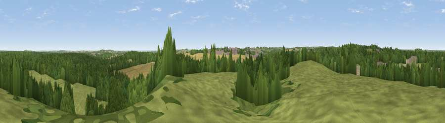

Viewpoint near Rainworth
#35236 in England · top 51% of its area beats it · near Rainworth · access?Where it is
The exact computed spot (SK 60025 59825). Click the marker for map links.
Public access: no public right of way or access land is recorded at this exact spot — it may be on private land. Computed from Natural England's CRoW access layer and OpenStreetMap rights of way — not the legal definitive map. Always verify locally.
The view, rendered

A 360° render of this exact spot computed from the terrain model, tree cover and land cover — summer colours, afternoon light, calibrated against photographs of famous viewpoints. Real trees, hedges and buildings will differ in detail.
The panorama
Grey silhouette: terrain skyline in each direction (720 bearings, Earth curvature and refraction included). Dashed green: skyline with trees (+15 m) and buildings (+8 m) as obstacles. Blue strip: how far the ground is visible on each bearing.
Where the view opens
Wedge length = distance to the farthest visible ground on that bearing (vegetation-aware). Rings at 10, 25 and 50 km.
What fills the view
41% grassland · 41% woodland · 12% cropland · 3% built-up · 3% bare ground
Angular shares of the visible panorama (visual magnitude), not map area. Landscape diversity 0.52 (0–1 Shannon).
Key numbers
More beautiful places nearby
The staircase of upgrades: each row has a higher view potential than everything closer. Driving times are estimates from straight-line distance, calibrated against real road routing — check an actual route before setting out.
| Place | Direction | Drive | Score |
|---|---|---|---|
| Viewpoint near Clipstone | WNW · 2 km | ~6 min | 41.3 |
| Viewpoint near Blidworth | S · 4 km | ~10 min | 46.1 |
| Viewpoint near Oxton | SSE · 7 km | ~14 min | 52.1 |
| Viewpoint near Farnsfield | SE · 7 km | ~15 min | 59.2 |
| Burstheart Hill [Thoresby Colliery] | NNE · 9 km | ~18 min | 69.3 |
| Crich Stand | W · 26 km | ~42 min | 73.0 |
| Alport Height | WSW · 31 km | ~48 min | 73.9 |
| Tissington Hill | W · 45 km | ~66 min | 75.5 |
53.13221, -1.10431 · source: screening · position refined by local search. Computed location — check access rights before visiting.